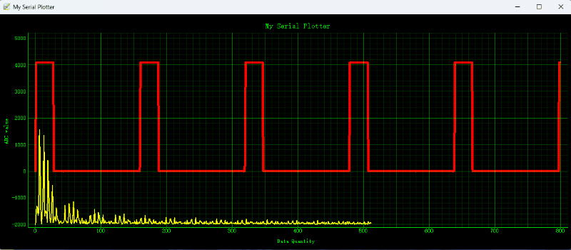
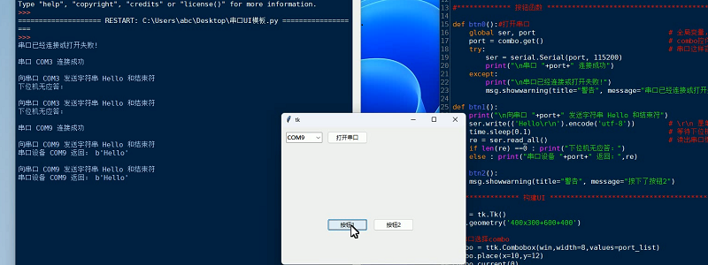
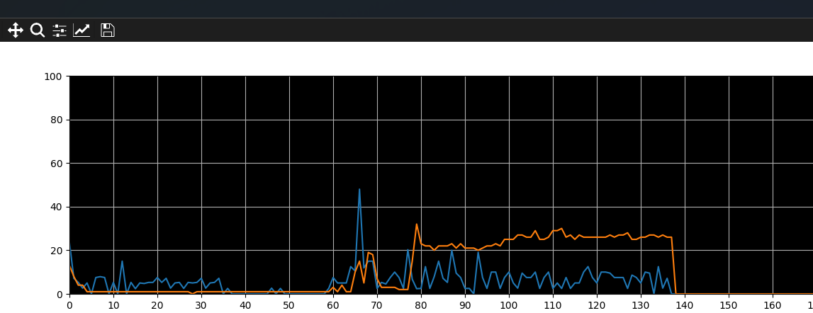
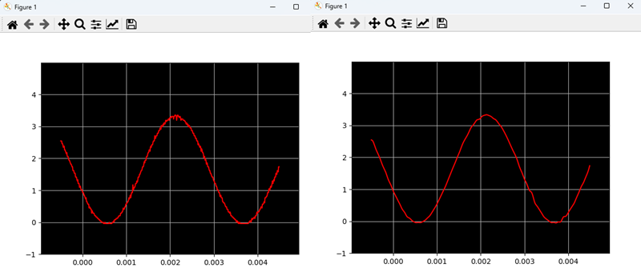
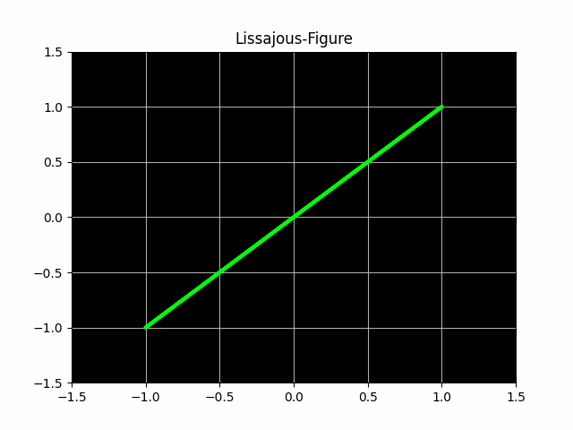
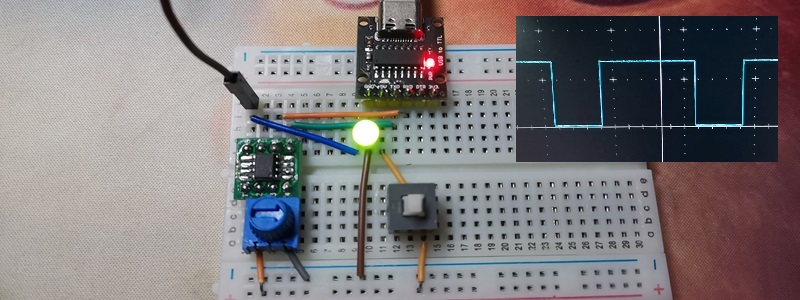

下图为某重点大学实验室提供的项目支持：
震动遥测：

文字识别：

信号处理：

提供：
--- 单片机/物联网/自动化/嵌入式 项目支持（ 声、光、电、磁、波等采集、控制、分析、报表、协同 ）
--- 中小企业（共享）计算机网络服务（ 中英双语、采购、安装、维修、培训、资产管理、数据安全...）
--- 定制软硬件开发，给物理、生物、机械等科研团队提供支持
下图为某重点大学实验室提供的项目支持：
震动遥测：
文字识别：
信号处理：
上位机
稍后提供演示版下载：
对于偶尔有上位机需求的，不是非要去啃 labview QT 什么的，python 通吃
下图演示了 STM32 ADC采样，Python绘图的实际例子，自己写代码就可以方便的加上 FFT FIR 等功能
手绘任意波
稍后提供演示版下载：

开门检测

温度记录仪

风扇转速测量

串口UI
监控 CPU GPU
把示波器嵌入到自己的程序里
这样可以实现自定义测量：比如远程测量，定时测量，长时间记录、数字滤波等
Lissajous ，李萨育
STC 用 ADC 控制 PWM
